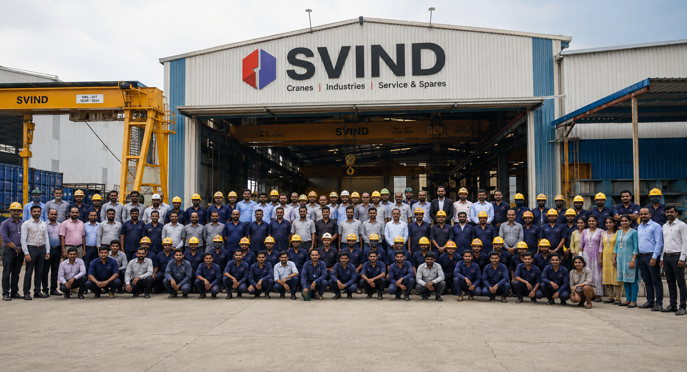

01 / Commercial Construction
We specialize in state-of-the-art commercial spaces, from corporate headquarters to retail centers, engineered for functionality and impact.
Learn moreManufacturer
0113
Our work rests on three levers: design, fabrication and service. Together they keep your bay at full capacity and your crane where it belongs.
We survey the bay, fix span, capacity and duty class to IS 807, then issue GA drawings and girder calculations for your approval — engineered to your cycle, not pulled off a shelf.


Girders, crab units and end carriages built in-house at Harohalli KIADB and proof-load tested before dispatch — because we make the components, spares match the crane you own.
Erection, commissioning and witnessed load testing on site, then AMC, inspection and spares from the same team that built it — the people who design the crane are the ones who service it.

Range
0413
Six crane families cover most enquiries. Everything is engineered to the duty class of your bay, not pulled off a shelf.
 Single-girder EOT cranes for shop-floor and assembly duty
IS 3177 · M3 – M6
Double-girder EOT and goliath cranes for heavy lifts and long spans
IS 807 · M5 – M8
Hot-metal and ladle cranes for foundries and steel plants
IS 4137 · Class III – IV
Single-girder EOT cranes for shop-floor and assembly duty
IS 3177 · M3 – M6
Double-girder EOT and goliath cranes for heavy lifts and long spans
IS 807 · M5 – M8
Hot-metal and ladle cranes for foundries and steel plants
IS 4137 · Class III – IV
 Single and double-girder gantry cranes for outdoor yards and precast plants
IS 807 · Rail mounted
Single and double-girder gantry cranes for outdoor yards and precast plants
IS 807 · Rail mounted
 Pillar-mounted and wall-mounted jib cranes for assembly and maintenance bays
IS 4137 · 360° slewing
Wire rope hoists, chain hoists, crab units, and crane components for retrofits
Spares in stock
Pillar-mounted and wall-mounted jib cranes for assembly and maintenance bays
IS 4137 · 360° slewing
Wire rope hoists, chain hoists, crab units, and crane components for retrofits
Spares in stock
How we deliver
0513
01
We measure the bay, fix span, lift height and duty class, then issue GA drawings and girder calculations for your approval.
02
Girders, crab units and end carriages are built in-house at Harohalli and proof-load tested before dispatch.
03
Erection, commissioning and load testing on site, then AMC, inspection and spares from the same team that built it.
Service & AMCIn service
0613
A double-girder goliath handling a segment mould under our own supervision. Every crane leaves the works proof-load tested, and we test it again on site after erection, in front of your team.

Proof
0813
20 Years manufacturing
S.V. Material Handling System Pvt Ltd has built cranes since 2006.
100 Tonne double-girder
Double-girder EOT capability to 100+ T, with spans engineered per bay.
807 IS design code
Designed to IS 807, IS 3177, IS 4137 and FEM 9.511 duty classification.

Crab units, forged hooks, rope drums, sheaves, DSL and shrouded busbars, pendant cables and gearboxes. Because we make the components, spares match the crane you already own.
From the works
0913
Industries
1013
Every industry has different duty-class requirements. We engineer the crane to match your cycle time, load spectrum, and bay conditions.
Coverage
1113
S.V. Material Handling System Pvt Ltd
Harohalli KIADB Industrial Area, Kanakapura Taluk,
Ramanagara District, Bengaluru, Karnataka
We serve Peenya, Bommasandra, Harohalli, Hosur road industrial belt, and across Karnataka. Site visits within 24 working hours.
Resources
1213
Standards explainers, selection guides, and cost breakdowns for engineers researching crane procurement.
Get a quote
1313
Span, capacity, lift height, duty class and power supply are enough to start. If you do not have them, we will come and measure.
From groundwork to grand structures, our expertise is your foundation for iconic commercial and residential landmarks.
We specialize in state-of-the-art commercial spaces, from corporate headquarters to retail centers, engineered for functionality and impact.
Learn moreCreating premium multi-unit residential complexes and communities with a focus on quality living and timeless design.
Learn moreOur dedicated team ensures every project is managed with precision, transparency, and a commitment to budget and timeline.
Learn more15
Stoneworth has been a pillar of the construction industry for five decades, delivering iconic and enduring projects with unwavering integrity.
Plants across Karnataka and the Hosur road belt on the cranes we built, commissioned and still maintain.

A 20 T double-girder crane over the melt shop, delivered to the drawing and load tested on site. The girders came out of their own bay at Harohalli, which is why the schedule held.

We run two shifts and the goliath has not lost a day since commissioning. Crab units and end carriages are theirs, so a spare is a phone call rather than an import.

Hot-metal duty is unforgiving and we needed a builder who had done it before. The ladle carrier frame was right the first time and the AMC visits have been on schedule.

We measure your bay, we listen to how you actually lift, and we build to that. No catalogue crane bent to fit.
We engineer for your duty cycle, not just your capacity.
SVIND started in 2006 with a simple position: the people who design a crane should be the people who fabricate it, test it and come back to service it. Girders, crab units and end carriages are built in-house at Harohalli, so the drawing and the steel never drift apart.
Our approach starts with the bay. Span, capacity, lift height, duty class and the power supply at the rail — we take the figures ourselves when you do not have them, because a duty class guessed from capacity alone is the single most common reason a crane wears out early.
Nothing here is oversold. Every machine is classified to IS 807 against your real load spectrum and cycles per shift, tested at FAT in front of your team, and handed over with the AMC contact being the same people who built it.
Ready when you are
Let’s start
Span, capacity and duty class are enough for us to tell you what fits and what it costs. One conversation, no sales pitch.
Free and without obligation
Frequent questions
The things buyers actually ask us before a purchase order. If yours is not here, ask engineering directly.
Span, capacity, lift height, duty class and the power supply at the bay. If you do not have those figures, we will visit and measure them.
By how hard the crane actually works, not by capacity. We classify to IS 807 using your load spectrum and cycles per shift, and map it to FEM 9.511 where a supplier or an insurer asks for that instead.
Single girder is lighter and cheaper and suits shorter spans and moderate duty. Double girder buys you higher capacity, longer span and better hook approach, and it is the only option for hot metal.
Both. Erection, alignment, commissioning and witnessed load testing are part of the scope, and you get the test certificate for your statutory file.
Yes. A good share of our AMC work is on other makes. We inspect first and tell you what needs fixing before anything goes on a contract.
A standard single-girder unit runs six to eight weeks. Double girder and hot-metal work depends on the long-lead items, and we give you a dated schedule with the quotation rather than a range.
Manufacturing is at Harohalli KIADB near Bengaluru. We supply across Karnataka and neighbouring states, and take projects further out where the site access and the schedule make sense.